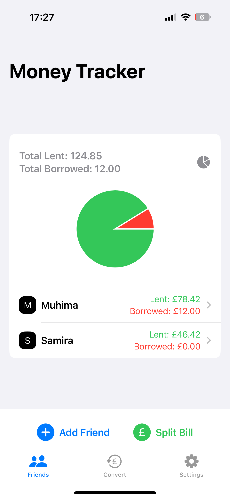
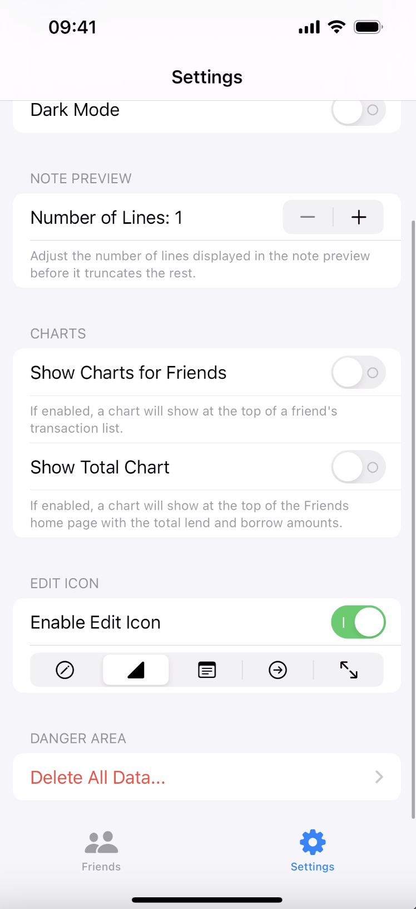
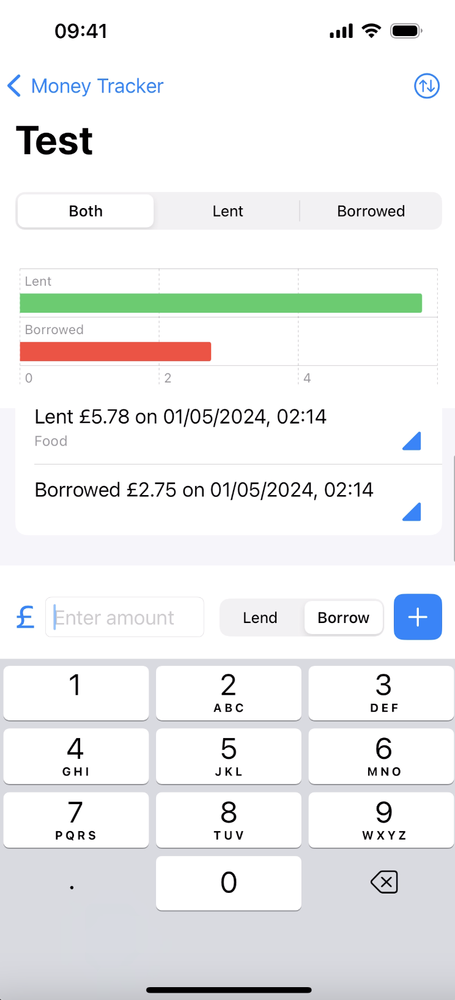
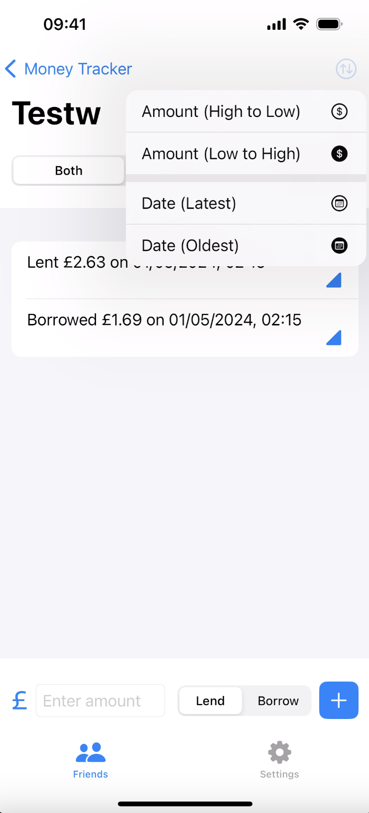
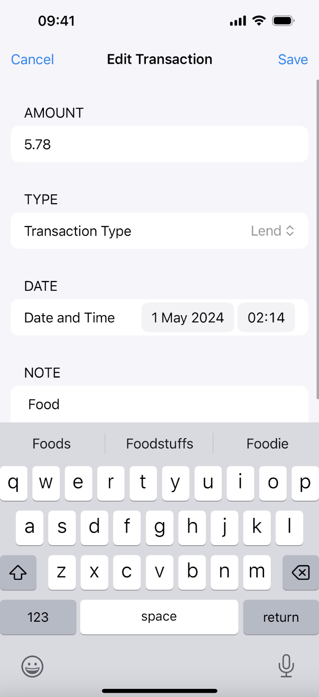

iOS app to manage financial transactions between friends and family, fully leveraging Apple's design language and simplicity.
Personally, calculating how much you owe people and vice-versa took a lot of effort and was both tiresome and boring - especially during public outings where you just want to quickly track the 'transaction' and go back to socialising. My aim with this app was to fix that, and to achieve that I set myself many personal goals. The main ones that stood out to me were the following:
Using research on similar apps on the market, have the right balance between complexity and simplicity to ensure it's quick, but also allow for a power user to use it effectively with advanced options.
The app had to be quick to open and navigate to ensure any actions the user wanted to execute happened as fast as possible. To do this, I calculated time-to-first-transaction and time-to-open times for several similar apps already on the market.
Feeling like a native Apple app was a must for simplicity. This would allow anyone to use the app effectively as it would be something they are already familiar with.
Simplicity, speed, power. Based on my research, it was clear that I had to implement these three elements in an efficient and effective way to deem it a success. My other goals were important to me, but these took priority during development.
Applications and Software used
Xcode
Used for the development of the app. It's the IDE required for iOS development. It has a very useful device simulator allowing for easy testing!
SF Symbols
Used for an easy overview of the various built-in icons made by Apple, as well as adapting any icon settings to fit my needs.
The App
In line with Apple's design language, there are two tabs at the bottom of the screen and all have that distinct, familiar Apple look. SwiftUI was specifically chosen for the familiar Apple aesthethic, and straightforward implementation process of all elements. Everything animates and interacts the same way as it would in a native Apple app.


Friends
The Friends view is where the user will be most of the time. You can see an overview of all friends, total amounts borrowed and lent for each friend including a total amount, a visualisation for lent and borrowed amounts, and friends are interactable for deeper, more detailed views.
Settings
The Settings view allows the user to customise the app to their needs. The view also contains an 'About' section and a 'Help' section to assist the user with getting started. There are various options available to customise the app to any user's needs. These include disabling certain aspects of the app, customising icons, a dark mode, deleting all data in one tap, and more!
Detailed Friend View
Tapping on any name on the Friends view allows the user to see all transactions associated with that friend. Transactions can be added at the bottom of the view, with no extra pop-ups or modals. Just type and add.
Sorting & Filtering
Each detailed friends view has sorting and filtering options to ensure the user has options available on how they'd like their data presented.
Editing a Transaction
All transactions can be edited, and all have a note field to add a note of any length.



Input Validation
All input fields have input validation to ensure no incompatible data is entered. If on the off-chance incompatible data is entered, it is dealt with by the app to ensure nothing gets corrupted and the app continues to function. A little message varying depending on input field appears when input validation is triggered! :)
Haptics
Something that can't be seen, but can instead be felt is the inclusion of haptics. I really like it when apps include fun little features that aren't necessary but really contribute to the app's feel. Every single time it happens I notice and appreciate it instantly as it really helps to feel like you tapped on something physical - and personally I think it's really satisfying. For my app I have tried to replicate that by adding haptics when switching between tabs at the bottom of the screen, switching between toggles in Settings, editing a transaction, and many more places!
Swipe to Delete
I am highlighting this to reinforce how much I wanted this app to feel like a native Apple app. I ensured the user could delete an entry by swiping to the left - reminiscient of a native Apple app (this was one of my many goals!).
Data Deletion & Dark Mode
Rather than individually deleting every entry, I wanted the user to have the option to delete all data in one swift tap (with many warnings!). Oh, and dark mode is enabled for this screenshot! :)
Help
The Settings view includes a help page to assist users in getting started and using the app.